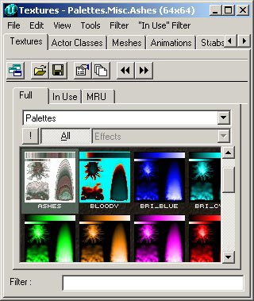

UDN
Search public documentation:
SpecialLightingFeaturesJP
English Translation
한국어
Interested in the Unreal Engine?
Visit the Unreal Technology site.
Looking for jobs and company info?
Check out the Epic games site.
Questions about support via UDN?
Contact the UDN Staff
한국어
Interested in the Unreal Engine?
Visit the Unreal Technology site.
Looking for jobs and company info?
Check out the Epic games site.
Questions about support via UDN?
Contact the UDN Staff
特殊照明機能
概要：特殊照明機能の設定の仕方を説明しているチュートリアル。 修正ログ：最終更新者Jason Lents（DemiurgeStudios）により、文書を管理しやすく分割。原著者はLode Vandevenne（Udn スタッフ）はじめに
この照明のチュートリアルでは、高度なライトの使用法、および様々な照明効果を得る方法を説明します。この方法では、照明の外部のプロパティ、およびLightColor（ライトの色）のプロパティを使用する必要がありますが、少しの工夫でよりよい効果がえられます。TexturePaletteLoop（テクスチャパレット ループ）
LightType（照明の種類）をLT_TexturePaletteLoop（テクスチャパレット ループ）に設定すると、光の色はスキンのパレット色を順にループします。パレットとは8ビットテクスチャの色テーブルで、PhotoshopやPSPを編集できます。光はパレットの色配列と同じ順序でパレットを透過します。 どんなP8テクスチャにもパレットがありますので、TexturePaletteLoopはすべてのP8テクスチャで作動します。最も役に立つテクスチャのあるtexturepackage Palettes.utxがありますが、ライトの色をいつどんな色にするのかを厳密に定義したい場合は、パレットを自分で作成することもできます。
テクスチャを選択し、ライトの[Light Properties]（ライトのプロパティ）から、[Display]（表示）→[Skins]（スキン）を開き、[Add]（追加）をクリックし、新しいスキンで[Use]（使用）を押します。これで、選択したテクスチャの名前がテクスチャフィールドに表示されます。 LE_TexturePaletteLoopのLightType（ライトの種類）を使用した場合、ライトはパレット色を循環します。LightPeriod（ライトの周期）ではライトが点滅する速さを、LightPhase（ライトの段階変化）では段階的変化を、それぞれ設定します。LightHue（ライトの色合い）およびLightSaturation（ライトの彩度）は、パレットの色を使用するため無視されますが、ライトの明度は作動します。
パレットのないテクスチャ（例えば、RGBA8またはDXT5テクスチャ）をスキンとして代用した場合のライトは、パレット色が循環するのとは違って、暗い色から明るくなり、また突然暗くなり、次第に明るくなる、といった変化となりますが、色はつきません。ただし、[Texture Properties（テクスチャプロパティ）→Texture（テクスチャ）]で、パレットパッケージのうちのどれか一つを採用するなど、別のパレットを割り当てることができます。この場合、テクスチャはパレットを使用しないため見た目が同じになりますが、TexturePaletteLoop（テクスチャパレットループ）には選択したパレットの色が適用されます。
コロナとLT_テクスチャパレットループには、このようなスキン[0]の同一設定が使用され、それぞれに異なるテクスチャをあてることはできません。しかし、どうしても個別設定を行いたい場合、RGBA8またはDXTテクスチャをコロナとして使用し、メニューのTexture Properties（テクスチャのプロパティ）→Texture（テクスチャ）→Palette（パレット）と進んで、使用したいパレットを同一テクスチャに割り当てます。
LE_TexturePaletteLoopのLightType（ライトの種類）を使用した場合、ライトはパレット色を循環します。LightPeriod（ライトの周期）ではライトが点滅する速さを、LightPhase（ライトの段階変化）では段階的変化を、それぞれ設定します。LightHue（ライトの色合い）およびLightSaturation（ライトの彩度）は、パレットの色を使用するため無視されますが、ライトの明度は作動します。
パレットのないテクスチャ（例えば、RGBA8またはDXT5テクスチャ）をスキンとして代用した場合のライトは、パレット色が循環するのとは違って、暗い色から明るくなり、また突然暗くなり、次第に明るくなる、といった変化となりますが、色はつきません。ただし、[Texture Properties（テクスチャプロパティ）→Texture（テクスチャ）]で、パレットパッケージのうちのどれか一つを採用するなど、別のパレットを割り当てることができます。この場合、テクスチャはパレットを使用しないため見た目が同じになりますが、TexturePaletteLoop（テクスチャパレットループ）には選択したパレットの色が適用されます。
コロナとLT_テクスチャパレットループには、このようなスキン[0]の同一設定が使用され、それぞれに異なるテクスチャをあてることはできません。しかし、どうしても個別設定を行いたい場合、RGBA8またはDXTテクスチャをコロナとして使用し、メニューのTexture Properties（テクスチャのプロパティ）→Texture（テクスチャ）→Palette（パレット）と進んで、使用したいパレットを同一テクスチャに割り当てます。
TexturePaletteOnce（テクスチャパレット 一巡）
TexturePalette（テクスチャパレット 一巡）は、TexturePaletteLoop（テクスチャパレット ループ）と機能は同じですが、作動は一度だけです。TexturePaletteOnce（テクスチャパレット 一巡）は、通常のライトと共に使用することができないため、共用する場合は新しいアクタクラスを作成してください。ゲームでこの新しいアクタが生成された時、パレットの色は一度ループして消えます。このアクタクラスのデフォルトプロパティは次のとおりです。- * bStatic ＝ False* (b固定 ＝ 無効) このbStatic（b固定）の設定については、ライトの移動の章をご覧ください。
- * Advanced?bNoDelete＝False*（詳細→削除なし＝無効)：生成したアクタを削除できるようにするには、このように設定します。
- * Advanced?LifeSpan?0*（詳細?有効期間?0）:アクタを有効にする期間を入力します。これはパレットの色を一巡するのに必要な時間でもあります。例えば、LifeSpan（有効期間）を3秒と設定した場合、アクタは一度生成されパレット全色を3秒で一巡してから消えます。
- * Display?Skin*（表示?スキン）：パレットに使用したいスキン
- * Lighting?LightType＝LT_TexturePaletteOnce*（照明?ライトの種類＝テクスチャパレット 一巡）
動いているライト
移動したいムーバーおよび補間パスや、飛行中のロケットや懐中電灯などの動くライトを利用するスクリプト化したアクタに、ライトを加えることができます。 デフォルト設定ではbStatic＝True（b固定＝有効）となっており、これをFalse（無効）にするとネットプレイでマップエラーの原因となるため、標準ライトアクタを動くライトに利用することはできません。 動的ライトを作動するには、[Lighting（照明）→bDynamicLight（b動的ライト）＝True（有効）]、および[Advanced（詳細）?bMovable（可動）＝True（有効）]を設定してください。 上記の設定が正確に行われた場合のみ、マチネパスに沿わせた移動のような、ライトの移動が可能です。動的ライトは、影を作成せず、単にライト設定場所の周囲に球状の光を作成し、ソリッドの壁を透過して光ります。左のイメージは固定ライトの、右は動的ライトの例です。 Syntax Error in%IMAGE{}% Tag Syntax Error in %IMAGE{}% Tag
LightEffect（ライト効果）およびLightType（ライトの種類）は、動いているライトやコロナとしても機能しますが、コロナを見るカメラの位置によっては、コロナが動かないように見えるという問題があります。
Corona（コロナ）
コロナは光源に配置される2D図面です。2Dスプライトと異なる点は、2Dスプライトの場合、遠くへ歩くにつれて画面上で小さく表示されますが、ライトのコロナは画面上に常に同じ大きさで表示される、という点です。コロナは、特に綺麗な効果に利用したり、マップに環境要素をたくさん追加することに利用します。 ライトにコロナを加えるには、[Light Properties（ライトのプロパティ）→Lighting（照明）→bCorona＝True（bコロナ＝有効））]を設定します。次に、[Display（表示）→Skins（スキン）]を進み、Add（追加）を押し、[0]を選択します。テクスチャブラウザでテクスチャを選択して、[Use]（使用）を押します。 Syntax Error in%IMAGE{}% Tag
そして、ジオメトリをリビルドします。カメラがライトに十分に近ければ、コロナが表示されます。コロナのサイズを変更するには、[Display→DrawScale（描画スケール）]を使用します。小さいコロナにするにはこの値を1より小さく、大きいコロナにはより大きくします。
Syntax Error in %IMAGE{}% Tag Syntax Error in %IMAGE{}% Tag Syntax Error in %IMAGE{}% Tag
LightRadius（ライト半径）はコロナの可視範囲を決定します。球状ライトの半径や、コロナの範囲を個別に変更することはできません。非常に小さい半径でありながら、コロナは非常に遠くからでも見えるようなライトを作成したい場合は、ライトを2つ作成します。その一つはコロナなしの小さい半径のライト、もう一つはコロナ付でLightBrightness（ライトの明度）＝0と設定した大きな半径のライトです。
[Light Properties]（ライトのプロパティ）の[Corona]（コロナ）タブには、編集の必要性がでてくる変数がまだもう少しあります。有効な効果の追加はもちろん、コロナの属性を調節することもできます。
Syntax Error in %IMAGE{}% Tag
- *CoronaRotation*（コロナ回転）：この属性では、カメラがコロナに近づく際のコロナの回転率を調整します。「1.0」より大きな値に設定すると、近づいたり遠ざかったりする際のコロナの回転をより早くする一方、「1」より小さい値なら、回転を弱め効果を薄めます。
- *CoronaRotationOffset*（コロナ回転オフセット）：コロナスキンの初期オフセットを定義します。設定したいコロナの回転や距離が決まっている場合は、望ましい回転になるように値を修正します。回転の標準Unreal単位は、全円が「65536」（つまり360度）すなわち180度なら「32768」、45度なら「16384」となります。
- *MaxCoronaSize*（最大コロナサイズ）：近づいたり遠ざかったりすると、コロナのサイズは変更します。遠くに行くほど、より大きくなります。この値で、コロナの拡大上限値を設定します。LightRadius（ライトの半径）（[Light Properties（ライトのプロパティ）→Lighting（照明）]）がこれよりも低く設定されている場合は、最大サイズまで大きくなりません。LightRadius（ライトの半径）が64だと、最大コロナサイズが1000と表示されます。このMaxCoronaSize（最大コロナサイズ）を2000にしたい場合は、描画スケールを2倍にするか、LightRadius（ライトの半径）を128に設定します。
- *MinCoronaSize*（最小コロナサイズ）:コロナに近づくにつれ小さくなりますが、この値を変更すれば、コロナの縮小下限値を設定します。
- *UseOwnFinalBlend*（独自の最終ブレンドの使用）:コロナは独自のFinalBlend（最終ブレンド）マテリアルを使用しますが、カスタマイズをしたい場合は、独自のFinalBlend（最終ブレンド）マテリアルを作ることも可能です。そして、この設定値をTrue（有効）にすれば、[Light Properties（ライトのプロパティ）→Display（表示）→Skins（スキン）]で、普段コロナが置かれているテクスチャの位置に、このFinalBlend（最終ブレンド）マテリアルを割り当てが行えます。
投影テクスチャ
投影テクスチャを使うと、シャドウをペイントしたり、その影をメッシュ、StaticMesh（静的メッシュ）、テレインまたはBSPなど、あらゆるものに投影することができます。ただし、パーティクルへの投影はまだサポートしていません。詳細は、UDNの投影テクスチャチュートリアルをご参照ください。 例えば、この木の陰は、レイトレーシングではなく投影テクスチャにより作成されました。よく見れば、この影がいかに精巧に表現され、BSPサーフェス上にレイトレースした影よりも高陰影ではるかに緻密に表現されていることがお分かり頂けるでしょう。この影の魅力としては、どんな種類のジオメトリ上でも均一な影を生成すること、武器を持って木の下を歩けば武器に影が映って見え、他のプレイヤーが木の上に立てば木の葉の影がそのプレイヤー映る、という表現力です。 Syntax Error in%IMAGE{}% Tag
ステンドグラスを透過した光などには色つき投影テクスチャを、回転するファンの影などにはアニメーション化した投影テクスチャを使います。プロジェクタに関する詳細は、ProjectorsTableOfContents（プロジェクタの目次）をご参照ください。